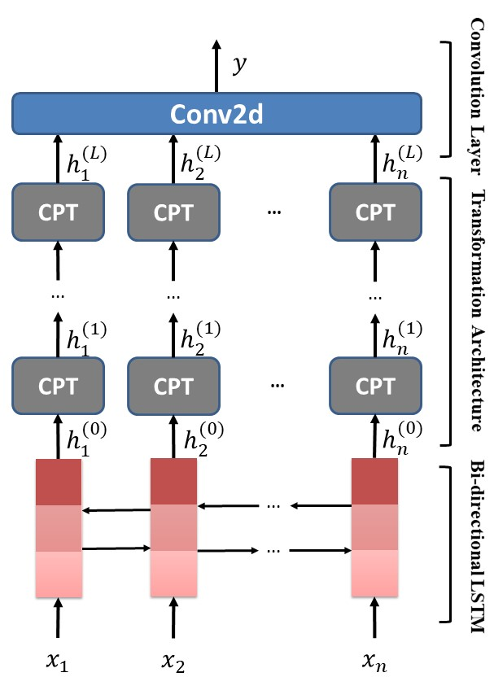
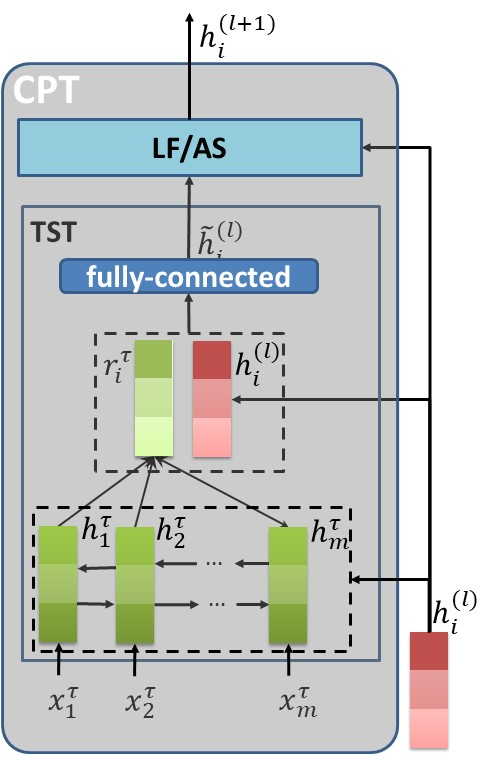

同一个词「long」，对「开机时间」是负面、对「电池续航」是正面。TNet 用一个「目标定制变换」组件，让每个词带上专属的目标信息，再交给 CNN 抓取关键短语——绕开 attention 的噪声问题。
任务：给一句话里的某个具体「目标词」判情感（正/负/中），同一句话里不同目标可能情感相反。
痛点：主流的 RNN+Attention 会引入无关词的噪声；而原本擅长抓关键短语的 CNN，却用不好目标信息、也分不清一句话里多个目标的不同情感。
做法：TNet = BiLSTM 编码上下文 → L 层 CPT（核心：目标定制变换 TST + 上下文保持机制）把目标信息「焊进」每个词的表示 → 位置加权 → CNN 抽取关键 n-gram 做分类。
结果：在 LAPTOP / REST / TWITTER 三个基准上全面刷新 SOTA，尤其在不合语法的推文上优势明显。
目标级（target-oriented / aspect-level）情感分类，要判断的不是「整句话」的情感，而是句子里某个明确出现的目标词的情感。任务被建模成：给一个 (目标, 句子) 对，预测它的情感类别 P（正）/ N（负）/ O（中）。
难点在于目标会改变词的情感倾向。最典型的例子是同一个修饰词「long」：
startup times are incredibly long: over two minutes.
开机要两分钟，「长」是缺点。
... the long battery life ( > 6 hrs ).
续航很长，「长」是优点。
另一种难点是一句话里多个目标情感相反，比如 great food but the service was dreadful——「food」是正面，「service」是负面。模型必须把正确的意见词绑定到正确的目标上。
这篇论文不堆 related work，只对比两条主线：当时占统治地位的 RNN+Attention，以及理论上很合适却用不好的 CNN。理解它们各自卡在哪，才理解 TNet 为什么这么设计。点开看每种方案怎么做、死穴在哪。
做法：BiLSTM 编码句子，用同一个目标表示去和每个上下文词算注意力分数，按分数加权求和得到句子表示，再分类。
死穴：注意力噪声。当模型高亮意见词时，常常顺带把无关词也算进来。例如 This dish is my favorite and I always get it and never get tired of it. 在高亮「favorite」时，会错误牵连「never」「tired」等负面词，拉低准确率。这个缺陷在机器翻译、图像描述里也被观察到。
直觉：一个目标的情感往往由关键短语决定（如「is my favorite」）。CNN 抽 n-gram 局部特征的能力很强，理应胜任。但实践中有两个障碍：
结论：CNN 的特征抽取能力值得用，但必须先解决「目标信息怎么进」和「多目标怎么分」这两件事。
TNet 的取舍：保留 CNN 强大的 n-gram 特征抽取，丢掉 attention；用一个新组件把目标信息精准注入每个词，再用位置策略帮 CNN 锁定正确的意见词。
TNet（Target-Specific Transformation Networks）自底向上分三层：BiLSTM 编码上下文 → L 层 CPT 把目标信息变换进词表示 → 位置感知的卷积层抽特征分类。下图是整体架构。

一句话总结：BiLSTM 管「上下文」，CPT 管「把目标焊进每个词」，CNN 管「抓关键短语」——各司其职。
CPT 层是 TNet 的灵魂，由两部分组成：TST（目标定制变换，负责注入目标信息）和 LF/AS（上下文保持机制，负责别把原始上下文弄丢）。

一句话总结：TST 为「每个上下文词」量身生成一份目标表示并融合，LF/AS 再把原始上下文加回来防止信息丢失。
传统 attention 用同一个目标表示去衡量所有上下文词；TST 反过来——为每个上下文词动态生成一份「量身定制」的目标表示。下面以上下文词 long 和目标 battery life 为例，点「下一步」走一遍。
非线性的 TST 会改变特征的均值方差，抹掉 BiLSTM 辛苦编码的上下文信息。为此 CPT 在 TST 之上加一个「上下文保持」机制，把变换前的特征加回来——这也让深层堆叠成为可能。论文给了两种实现，对应两个模型变体。
直接把变换前的特征「无损」加到变换后特征上，类似残差连接。
展开后每层输出都含原始 h⁽⁰⁾，上下文被完整保留。参数少、更稳定。
用一个 sigmoid 门控，动态调节保留多少原始特征、多少变换特征（类似 highway/LSTM 门）。
表达力更强，整体略优；但多了门控参数，层数大时更敏感。
CNN 的第二个死穴——把无关意见词关联到目标——靠位置相关性解决：离目标越近的词，越可能是它真正的修饰词。论文给每个词算一个位置权重 vᵢ，去缩放卷积层的输入：离目标近的被放大，远的被压低。
之后把加权后的 h⁽ᴸ⁾ 送进卷积层抽 n-gram 特征、max pooling、再接全连接 softmax 出情感。论文用单一 kernel size = 3，即抓 trigram（三元组）特征。
论文表 4 给了一组真实样例。目标词用高亮标出并带真值标签，对比 BILSTM-ATT-G、RAM（两个强 attention baseline）和 TNet。切换下面的标签看每个案例——✓ 表示预测正确，✗ 表示错误。
TNet-LF 与 TNet-AS 在 LAPTOP、REST、TWITTER 三个数据集的准确率和 Macro-F1 上全部最优（p < 0.01 显著优于强 baseline BILSTM-ATT-G 和 RAM）。下面是 TNet-AS 的准确率与最强 baseline 的对比。
几个值得记住的发现：
一句话取舍指南：正式、规范的文本（产品评论）LSTM 类模型能靠序列特征做好；而面对不合语法的短文本（推文），CNN 抓 n-gram 的 TNet 更稳——前提是先用 TST + 上下文保持把目标信息正确地注入进去。